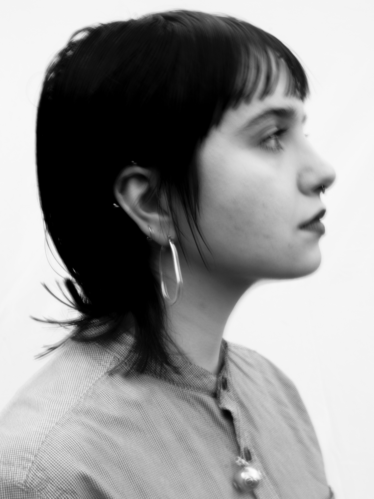
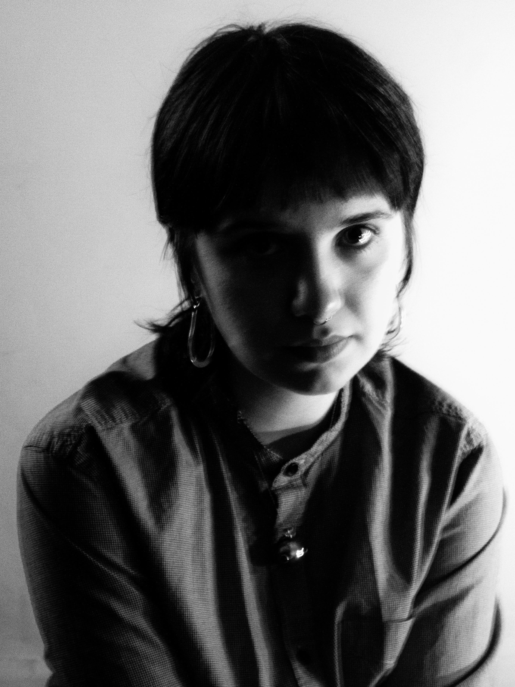

RHIANNON HOPE


Credit: Sam Dallamore-Hynd, hi-res here | hi-res here
{kind=link}
{kind=link}
About Rhiannon Hope
Helming from Leeds-via-Liverpool, Rhiannon Hope has quickly found her footing in Yorkshire’s grassroots scene, collecting a unique band of multi-instrumentalists along the way. Together, they create textured, jazz-influenced folk soundscapes which act as a bed for Rhiannon’s bittersweet experiences of womanhood, identity and the working class. Somewhere between her unfaltering vibrato and intimate songwriting, Hope has earned a loyal following in her adopted city.
Last year, Rhiannon released her debut EP, All Things, Rising And Returning, on vinyl via Leeds cult label Private Regcords. The record was featured as one of Far Out Magazine’s top independent releases of the year, as well as receiving support from DIY Magazine, Louder Than War, BBC Introducing, Still Listening Magazine and more. Rhiannon has previously shared the stage with the likes of Green Gardens and Gal Go (of King Krule), and has plans for a second EP release later this year.
About the Single
'Magpie' arrives on streaming 23rd April via Private Regcords.
Following the release of her debut EP All Things, Rising And Returning, Leeds folk songwriter Rhiannon Hope returns with the delicately drawn-out ‘Magpie’.

'Magpie' single artwork, design by Richard Furnace
An ode to trinkets and those who collect them, ‘Magpie’ marks a departure from the sound that Rhiannon Hope honed on All Things, Rising And Returning. Her vocals are just as commanding, her songwriting just as gentle, but Hope swaps her trusty accordion for a seven-minute indulgence in looping keys and auxiliary percussion. Saxophones and subtle drums fade in and out of view as Hope ruminates on the myth of the magpie, the comfort of collecting.
This departure may stem from Rhiannon’s approach to writing the track, which involved fusing two shorter writings into what would become the lengthiest song in her discography. “Each was a little too short to be its own song,” she explains, “I’d never written a song like that before, but I really enjoy how long the song is and how completely different the two sections are.” Despite the daunting length, the track was recorded completely live and has already become a band and fan favourite in their setlist.
Written while Hope was settling into a new city, ‘Magpie’ became an way to affirm a new identity, an attempt to ground herself through the collected ornaments and objects that surrounded her. “‘Magpie’ is a song for collectors,” Rhiannon explains, “It’s a personal love letter to all the shit I have ever accumulated and loved; trinkets, hats, plants, mugs, posters, books, and anything else. All the things that bring me comfort and make me feel like a person.”
“I also just love objects; I’m a bit of a hoarder,” Hope affirms, “Not in a shallow way - not that there’s anything wrong with that - but I have sweet wrappers or bottle tops that I can’t let go of because they remind me of a nice memory. I think it’s really special and so I wanted to write about that.” ‘Magpie’ arrives on 23rd April.
Upcoming
To celebrate the release of ‘Magpie’, Rhiannon will play a hometown headline at the beloved Brudenell Social Club, accompanied by Neve Cariad and Sam King.
Debut EP: All Things, Rising and Returning
“songs that feel like individual prayers, each existing in a delicate world of their own” - Far Out Magazine
Further support from DIY Magazine, Still Listening, Louder Than War, BBC Introducing and more.
Weaving odes to jazz greats into tales of the working class experience and stitching gentle twangs into accordion hums, All Things, Rising and Returning marked the debut release from Rhiannon Hope in September 2025. The EP nurtures a unique blend of traditional folk and contemporary influences, with Rhiannon looking to the likes of Ella Fitzgerald and Aldous Harding for sonic guidance. The resulting sound is at once delicate and deliberate, wistful yet soulful, and, perhaps most of all, timeless.
The EP was named one of Far Out Magazine's Top 15 Independent Releases of 2025, with BBC radio plays for singles 'B.B.' and 'Indulge'. It was pressed to vinyl as Private Regcords' first ever physical release.


All Things, Rising and Returning
- All Things, Rising and Returning
- B.B.
- Indulge
-
Toothpaste (Live)*
*only included on physical copies
For More Information
elle_palmer@msn.com
privateregproject@gmail.com
Guestlist, full EP streams and interviews available upon request.